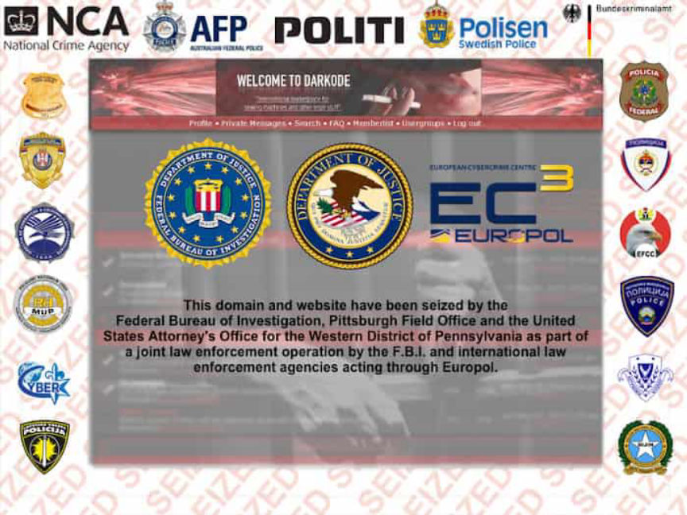
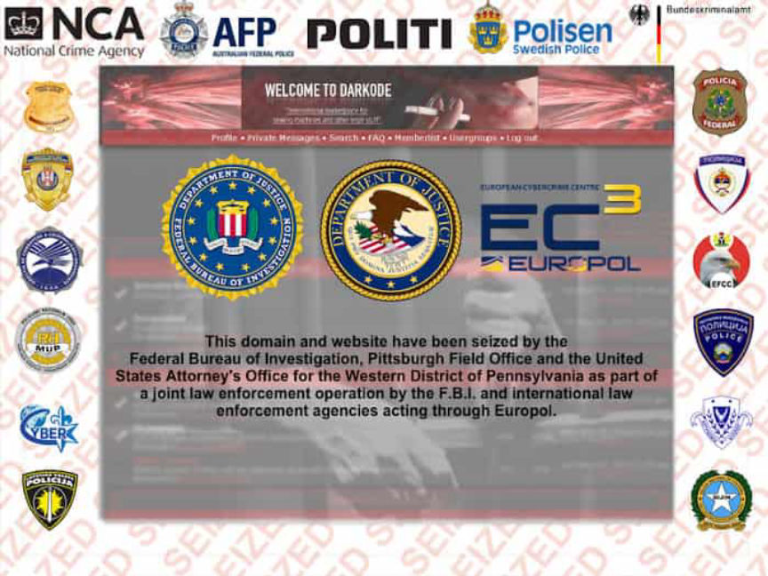

Darkode Forum Admin Arrested in Germany
~2 min read | Published on 2019-10-03, tagged Arrested, Darkweb-Market, Forums, admin using 479 words.
Reports from Slovenia disclosed that German authorities arrested a Slovenian citizen on request of the U.S. government. The accused is suspected of being one of the founders and administrators of the now-defunct Darkode forum that was once described as “the most sophisticated English-speaking forum for criminal computer hackers in the world.” He is also accused of authoring and selling a botnet malware software.
Matjaz Skorjanc 32, also known as iserdo and serdo from Maribor Slovenia was charged alongside three other suspects in a sealed indictment filed in December 2018 and made public in June 2019 by the U.S. attorney’s office of Columbia. Skorjanc and his accomplices were charged with racketeering conspiracy to develop and distribute malware through Darkode.
As described in the indictment, Darkode was an online malware marketplace that facilitated the development and sale of malware. To join the forum, one had to be invited by an existing member. After being invited, the aspiring member had to post proof that he or she had the prerequisite skills and products. A new member only acquired the forum’s full access after other existing members vouched for him. Members’ conduct was highly regulated by the Administrators. The forum Admins could punish or revoke the access of members whose conduct they deemed unacceptable.
Investigators believe Skorjanc was Darkode’s first Admin and controlled its operations from September 2008 to March 2010. As the Admin Skorjanc resolved disputes that arose amongst the forum’s members. While acting as the Admin Skorjnac coauthored a bot software known as Mariposa botnet, he sold the botnet on the Darkode Forum.
Authorities believe the botnet infected more than 1 million hacked computers. The botnet formed the basis for Skorjanc’s indictment by U.S. authorities in 2011 alongside two other suspects. At the time of this indictment, Skorjanc had been arrested and charged by Slovenian authorities. He was found guilty by the Maribor court in 2013 and sentenced to 4 years and ten months in prison. He was released in late 2017.
On being released, Skorjanc launched and acted as the chief technology officer of NiceHash a Slovenian crypto-mining marketplace. Slovenian authorities are reportedly still investigating a 2017 hack on NiceHash. The hack led to the loss of more than 4,400 bitcoins.
Darkode was taken down in 2015 by a globally coordinated operation dubbed Operation Shrouded Horizon. In the course of the investigations, the law enforcement agencies involved searched or arrested suspected Darkode members. In addition to the 12 suspects charged by the U.S. three high ranking members of Darkode arrested in earlier phases of the operation pleaded guilty.
Two of the four suspects charged together with Skorjanc are still fugitives. The first suspect and the only American citizen was arrested in December 2018. Skorjanc is set to be extradited to the U.S. to face the charges leveled against him where if found guilty he could be sentenced to decades in prison.
Matjaz Skorjanc 32, also known as iserdo and serdo from Maribor Slovenia was charged alongside three other suspects in a sealed indictment filed in December 2018 and made public in June 2019 by the U.S. attorney’s office of Columbia. Skorjanc and his accomplices were charged with racketeering conspiracy to develop and distribute malware through Darkode.
As described in the indictment, Darkode was an online malware marketplace that facilitated the development and sale of malware. To join the forum, one had to be invited by an existing member. After being invited, the aspiring member had to post proof that he or she had the prerequisite skills and products. A new member only acquired the forum’s full access after other existing members vouched for him. Members’ conduct was highly regulated by the Administrators. The forum Admins could punish or revoke the access of members whose conduct they deemed unacceptable.
The Dark0de Seizure Banner | Credit: FBI
Investigators believe Skorjanc was Darkode’s first Admin and controlled its operations from September 2008 to March 2010. As the Admin Skorjanc resolved disputes that arose amongst the forum’s members. While acting as the Admin Skorjnac coauthored a bot software known as Mariposa botnet, he sold the botnet on the Darkode Forum.
Authorities believe the botnet infected more than 1 million hacked computers. The botnet formed the basis for Skorjanc’s indictment by U.S. authorities in 2011 alongside two other suspects. At the time of this indictment, Skorjanc had been arrested and charged by Slovenian authorities. He was found guilty by the Maribor court in 2013 and sentenced to 4 years and ten months in prison. He was released in late 2017.
On being released, Skorjanc launched and acted as the chief technology officer of NiceHash a Slovenian crypto-mining marketplace. Slovenian authorities are reportedly still investigating a 2017 hack on NiceHash. The hack led to the loss of more than 4,400 bitcoins.
Darkode was taken down in 2015 by a globally coordinated operation dubbed Operation Shrouded Horizon. In the course of the investigations, the law enforcement agencies involved searched or arrested suspected Darkode members. In addition to the 12 suspects charged by the U.S. three high ranking members of Darkode arrested in earlier phases of the operation pleaded guilty.
Two of the four suspects charged together with Skorjanc are still fugitives. The first suspect and the only American citizen was arrested in December 2018. Skorjanc is set to be extradited to the U.S. to face the charges leveled against him where if found guilty he could be sentenced to decades in prison.